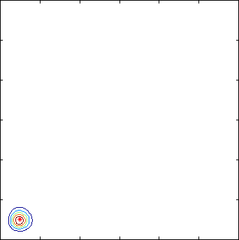

A population on the move

This example is a model of two populations P1 and P2 that move
according to certain rules between two regions R1 and R2. An
individual from P1 will tend to move between R1 and R2 in such a
way as to avoid living together with individuals from P2. On the
other hand, individuals from P2 tries to live where P1-individuals
live. These rules are clearly visible in the animation above where
P2-individuals "follow" those from P1. The red asterisk is the
expected value and spirals in towards the middle (it is thus of a
very limiting insight). The probability density slowly smears out
and reaches a kind of crater formation in the long-time limit.
(Plot info: the coordinate system covers the domain
[-60,60]-by-[-60,60] and thus each axis tick is 20
individuals. The contour levels have been chosen by Matlab)
References
S. Engblom: Spectral Approximation of Solutions to the Chemical
Master Equation, in J. Comput. Appl. Math.
229(1):208--221,
2009: (doi)
S. Engblom: Galerkin Spectral Method applied to the
Chemical Master Equation, in Commun. Comput. Phys.
5(5):871--896,
2009: (abstract), (pdf).
Stefan Engblom
Last modified: Fri Sep 6 14:53:59 CEST 2024